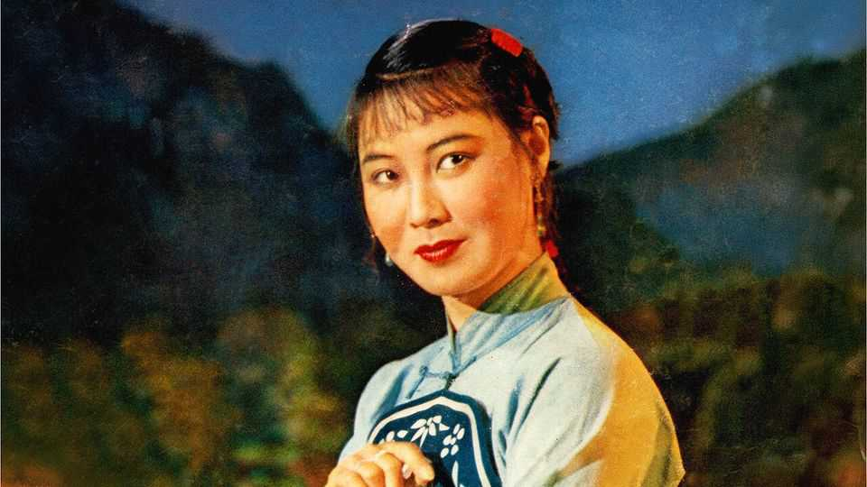

Guo Lanying was the singer everyone loved
The performer and champion of traditional opera died on August 11th, aged 97

Sep 3rd 2026
The question was simple, but it still took her by surprise. A well-dressed young man stood up at one of her talks and asked, “Do you have a signature song?” Before she could answer, the whole audience, young and old, burst out in chorus. “A great river flows, wide are its waves,/Wind blows the scent of rice blossoms to both shores...” And Guo Lanying rocked with laughter.
That song, “My Motherland”, was indeed her signature. Both melody and words were in the simple folksong style she loved. She had sung it most famously in “Shangganling”, a film of 1956 about a recent battle of the Korean war, sitting demure and radiant in military uniform in a cave full of battered soldiers who, group by group, joined in with her. China was indeed beautiful, its roads broad and its waters full of white sails. But “In order to usher in a new era/They’ve woken the sleeping mountains/And changed the shapes of the rivers.” Revolutionary progress was mixed in with natural human homesickness. Another of her most famous songs, “Nanniwan”, celebrated the transformation of a north-western gorge into fertile, productive fields (“Crops everywhere!”) by the 359th Brigade. Again, people sang this up and down the land, and she was delighted to perform it to anyone, many or few, farmers or factory workers, premiers (Zhou Enlai was a great fan) or dumpling-sellers. Not for nothing was she named in 2019 a People’s Artist, one of China’s highest honours.
Yet it was opera that had made her: traditional opera, dealing not just with lords and princes (she parading in heavy, glittering robes and extravagant headresses) but, from the 1940s, with ordinary people trying to get by. At 15, she fell in love with an opera called “The White-Haired Girl". This was the story of Xi’er, a young peasant woman whose land was taken by a vicious landlord who made her his concubine. Rather than submit she took refuge in a cave, her hair and skin turning white as a ghost’s, her clothes in rags, until the soldiers of the Chinese Communist Party brought her back to the sunlight.
Lanying thrilled to this role, in large part, because a rapacious man got his come-uppance. In China’s old society, even sometimes under the new, women were on the bottom rung: subservient to husbands and parents-in-law, confined to the house. She sang their resistance. In another opera, “The Injustice to Dou E”, she played a woman falsely accused of murder, singing much of the time on her knees with a wooden crime placard strapped to her back. But her final aria, “Pathetic and Disgraceful”, was a lacerating attack on her male abusers and accusers and on the old justice system in general. The high, pure soprano could become a furious mezzo, as necessary.
That voice had been beaten into her, as was the way in those days. As an apprentice singer and performer, on a five-year contract starting at the age of six, she was taken into her master’s household and ruthlessly trained. If she failed to do a somersault perfectly, she was lashed with a leather sheep-whip. For insubordination, she was bludgeoned black and blue with a rolling pin. In the bitter winters of Shanxi, her home region in the north, she was made to do vocalising exercises lying face-down on a frozen lake; she had not done well unless her breath melted a hole in the ice.
To escape this regime she once took poison and, at 11, ran away, but being so far from her own village she had no idea where to go. Besides, she was determined to sing, even if this treatment was the price. She had been spared to do it. As a baby, unable to get a drop of mother’s milk because her peasant parents had only a handful of millet in an iron pot, she had been left in the woods to die. But an aunt rescued her, and an uncle, when she was four, suggested opera. Her parents, starving again by then, sold her to the opera master for five copper coins, or around $12. She fought to stay at home but her mother remarked that, if she became a singer, she could eat from a hundred households.
So she had persevered, progressing from maids-with-teapots parts to roles big enough to get her on the posters. But after she had seen “The White-Haired Girl” she packed her few things and ran after the performance troupe, joining the revolution by begging for the part of Xi’er. In order to get it she practised harder than ever, especially enunciation. Since audiences listened to opera not for her voice, but for her meaning, she must bite on every word, and let each one land like a hammer-blow on the heart.
Yet, as an art form, Chinese opera was struggling. During the Cultural Revolution it was banned for a decade and she herself was sent to “the cowshed”, an improvised prison where she had to do forced labour. (In December 1976, after the arrest of the Gang of Four, she dared to change a song in mid-concert to praise, not the People’s Liberation Army as usual, but Zhou, whose death that year had hastened the end of the catastrophe.) Zhou had hinted to her that she ought to train successors in her art before it was eclipsed by Western influences. So, on retirement in the 1980s, she sold her house and her awards to found in Guangzhou an art and opera school that was later named after her. She and her husband even helped build it, heaving stones and laying roads.
Becoming China’s favourite female singer had been equally hard work. She impressed that work ethic on her students; if she wasn’t tough on them, audiences would be tough later. Her routine in old age was still vigorously ascetic, including half a bowl of aged Shanxi vinegar with her meals. She painted orchids (lan in Chinese), feeling empathy with them from the name she shared. She had endured. It was true that a deep core of anger had also pushed her on. But to dissolve it, and forget it, she had only to hear a packed, adoring theatre singing her songs back to her. ■